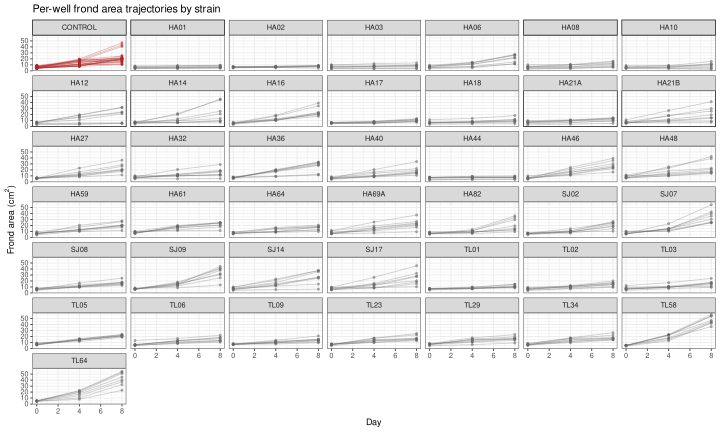

Read and format duckweed-bacteria coculture frond area data
Lemna was grown in 24-well plates, either alone (CONTROL) or co-cultured with a single bacterial strain per well group. Each plate hosts up to three strains + plant, with each strain occupying 8 wells (biological replicates) on that plate. The same physical plate was imaged at day 0, day 4, and day 8, so a given well is tracked longitudinally across the three timepoints.
0.1 Libraries
0.2 Global variables
1 Read and combine
Each xlsx file holds one Export sheet covering a subset of plates at a single timepoint. The day (0, 4, or 8) is encoded in the filename (e.g. DW_plates_1-10_4d.xlsx), not in the sheet itself, so we parse it from the filename as we read.
Show/hide code
frondarea_files <- fs::dir_ls(data_raw, glob = "*.xlsx")
read_frondarea_file <- function(path) {
day <- as.integer(str_extract(path_file(path), "(?<=_)\\d+(?=d\\.xlsx$)"))
read_excel(path, sheet = "Export") |>
rename(
date = Date,
plate_id = `Plate ID`,
plate_name = `Plate Name`,
well_id = `Well ID`,
sample = Sample,
replicate = Replicate,
area = Area,
color_blue = `Average Object Color:Blue`,
color_green = `Average Object Color:Green`,
color_hue = `Average Object Color:Hue`,
color_red = `Average Object Color:Red`,
color_saturation = `Average Object Color:Saturation`,
color_value = `Average Object Color:Value`,
count = Count
) |>
mutate(
day = day,
source_file = path_file(path)
)
}
frondarea_raw <- frondarea_files |>
map(read_frondarea_file) |>
list_rbind()
glimpse(frondarea_raw)Rows: 1,128
Columns: 16
$ date <chr> "2026-06-03T12:17:28.796Z", "2026-06-03T12:16:38.213Z…
$ plate_id <chr> "A1", "A1", "A1", "A1", "A1", "A1", "A1", "A1", "A1",…
$ plate_name <chr> "HA_36_HA40_HA44", "HA_36_HA40_HA44", "HA_36_HA40_HA4…
$ well_id <chr> "A1", "A2", "A3", "A4", "A5", "A6", "B1", "B2", "B3",…
$ sample <chr> "HA36", "HA36", "HA40", "HA40", "HA44", "HA44", "HA36…
$ replicate <dbl> 1, 5, 1, 5, 1, 5, 2, 6, 2, 6, 2, 6, 3, 7, 3, 7, 3, 7,…
$ area <dbl> 7.63, 6.80, 7.08, 6.24, 7.23, 3.80, 6.38, 7.62, 8.45,…
$ color_blue <dbl> 44.0, 39.0, 52.0, 25.0, 50.0, 35.5, 31.5, 35.5, 52.0,…
$ color_green <dbl> 135.0, 139.0, 141.0, 133.0, 140.0, 138.0, 136.5, 138.…
$ color_hue <dbl> 53.68, 51.99, 51.01, 51.78, 51.65, 50.78, 51.62, 52.1…
$ color_red <dbl> 121.5, 126.0, 131.0, 116.0, 129.0, 125.0, 120.0, 122.…
$ color_saturation <dbl> 170.51, 181.65, 158.65, 204.94, 160.84, 187.10, 195.2…
$ color_value <dbl> 134.85, 138.79, 141.16, 132.88, 139.73, 138.45, 136.6…
$ count <dbl> 2, 1, 1, 2, 1, 2, 2, 2, 2, 1, 1, 2, 1, 2, 1, 2, 1, 1,…
$ day <int> 0, 0, 0, 0, 0, 0, 0, 0, 0, 0, 0, 0, 0, 0, 0, 0, 0, 0,…
$ source_file <chr> "DW_plates_1-10_0d.xlsx", "DW_plates_1-10_0d.xlsx", "…2 Derive plate and well identifiers
plate_id (e.g. "A1") is not a globally unique plate identifier - it is reused across the different filename batches (plates 1-10, 11-14/15, 15-17), so the same code can refer to different physical plates. plate_name (the underscore-joined list of strains on that plate, e.g. "HA_36_HA40_HA44") is unique per physical plate and - I verified this by comparing well-to-sample maps across files - stays constant across a plate’s day 0/4/8 files when its plate_id changes between timepoints (e.g. the SJ08_CONTROL plate is plate_id "A2" at day 0 but "E2" at day 4/8). So plate_name alone is the correct cross-day plate key, with one exception: two distinct plates in the day-0-only file DW_plates_15-17_0d.xlsx both carry the generic plate_name "CONTROL" (plate_id B2 and C2); for that one label we fall back to plate_name + plate_id to disambiguate them (they have no day 4/8 counterpart to match against, so this doesn’t affect any longitudinal join). Combining plate_uid with well_id gives a stable identifier for a single physical well tracked across timepoints.
Show/hide code
frondarea <- frondarea_raw |>
mutate(
plate_uid = if_else(
plate_name == "CONTROL",
paste(plate_name, plate_id, sep = "_"),
plate_name
),
well_uid = paste(plate_uid, well_id, sep = "_"),
strain = factor(sample) |> fct_relevel("CONTROL"),
is_control = sample == "CONTROL"
) |>
select(
day,
plate_uid,
well_uid,
well_id,
plate_id,
plate_name,
strain,
sample,
replicate,
is_control,
area,
count,
color_blue,
color_green,
color_hue,
color_red,
color_saturation,
color_value,
date,
source_file
)
glimpse(frondarea)Rows: 1,128
Columns: 20
$ day <int> 0, 0, 0, 0, 0, 0, 0, 0, 0, 0, 0, 0, 0, 0, 0, 0, 0, 0,…
$ plate_uid <chr> "HA_36_HA40_HA44", "HA_36_HA40_HA44", "HA_36_HA40_HA4…
$ well_uid <chr> "HA_36_HA40_HA44_A1", "HA_36_HA40_HA44_A2", "HA_36_HA…
$ well_id <chr> "A1", "A2", "A3", "A4", "A5", "A6", "B1", "B2", "B3",…
$ plate_id <chr> "A1", "A1", "A1", "A1", "A1", "A1", "A1", "A1", "A1",…
$ plate_name <chr> "HA_36_HA40_HA44", "HA_36_HA40_HA44", "HA_36_HA40_HA4…
$ strain <fct> HA36, HA36, HA40, HA40, HA44, HA44, HA36, HA36, HA40,…
$ sample <chr> "HA36", "HA36", "HA40", "HA40", "HA44", "HA44", "HA36…
$ replicate <dbl> 1, 5, 1, 5, 1, 5, 2, 6, 2, 6, 2, 6, 3, 7, 3, 7, 3, 7,…
$ is_control <lgl> FALSE, FALSE, FALSE, FALSE, FALSE, FALSE, FALSE, FALS…
$ area <dbl> 7.63, 6.80, 7.08, 6.24, 7.23, 3.80, 6.38, 7.62, 8.45,…
$ count <dbl> 2, 1, 1, 2, 1, 2, 2, 2, 2, 1, 1, 2, 1, 2, 1, 2, 1, 1,…
$ color_blue <dbl> 44.0, 39.0, 52.0, 25.0, 50.0, 35.5, 31.5, 35.5, 52.0,…
$ color_green <dbl> 135.0, 139.0, 141.0, 133.0, 140.0, 138.0, 136.5, 138.…
$ color_hue <dbl> 53.68, 51.99, 51.01, 51.78, 51.65, 50.78, 51.62, 52.1…
$ color_red <dbl> 121.5, 126.0, 131.0, 116.0, 129.0, 125.0, 120.0, 122.…
$ color_saturation <dbl> 170.51, 181.65, 158.65, 204.94, 160.84, 187.10, 195.2…
$ color_value <dbl> 134.85, 138.79, 141.16, 132.88, 139.73, 138.45, 136.6…
$ date <chr> "2026-06-03T12:17:28.796Z", "2026-06-03T12:16:38.213Z…
$ source_file <chr> "DW_plates_1-10_0d.xlsx", "DW_plates_1-10_0d.xlsx", "…3 Quality checks
Each well should be measured at most once per day.
Area should be strictly positive - a few wells have area == 0 and count == 0 together. These are dropped
Show/hide code
Sample-to-day completeness. Every strain should have (roughly) balanced replication across the three timepoints; CONTROL is expected to be imbalanced because a couple of CONTROL-only plates were only imaged at day 0 (see below).
Show/hide code
well_id -> sample mapping should be identical across days for the same plate (confirms the longitudinal, same-well-tracked-over-time design rather than fresh plates each day).
Show/hide code
CONTROL replication by plate and day, for context: a couple of pure-CONTROL plates (plate names CONTROL and SJ08_CONTROL, the latter only partially) were imaged only at day 0 and so contribute no day 4/8 growth information; the rest of CONTROL (plates TL64_TL58_CONTROL and SJ08_CONTROL at day 4/8) is measured at all three timepoints.
4 Exploratory look
Show/hide code
frondarea |>
ggplot(aes(x = day, y = area, group = well_uid, color = is_control)) +
geom_line(alpha = 0.3) +
geom_point(size = 0.8, alpha = 0.5) +
facet_wrap(~strain) +
scale_color_manual(
values = c(`TRUE` = "firebrick", `FALSE` = "grey40"),
guide = "none"
) +
labs(
x = "Day",
y = expression("Frond area (" * cm^2 * ")"),
title = "Per-well frond area trajectories by strain"
) +
theme_bw(base_size = 9)